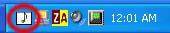

| |
There are a
couple of things below you really
need to read to use FOX Media Center.
|
|

|
- The brains of FOX Media Center are all in the task tray icon
like the one on the left. Double click on the music icon to show
the playlist window. Or right mouse click on the icon for a
popup menu. If you close the playlist window the program is
still running in the task tray, you need to select exit from the
popup menu. I like to close the playlist window with the music
still playing and just control the program from the popup menu
in the task tray.
- To create a playlist click on the eject button on the
playlist window. (At least on the skins I did). Then click 'New
Playlist' and type in a name. Drag and drop all the songs you
want for that playlist onto the playlist manager window. Then
click 'Play Selected' or 'Save All' to save your playlist. If
you have heaps of songs you can try creating a random playlist.
Click the 'New Random' button. In the New Random Dialog you need
to enter a few things. Max number of files is how many files
will randomly be added to the playlist. Next hit the 'Browse'
button to select a directory that has a lot of songs in it. Then
once you have a directory click the 'Add Directory' button. You
can add as many directories as you like. Below that is file
type. If you want to add MP3 files, click 'Add File Type'. You
can add as many files types as you like. eg. *.mpg or *.wma.
When selecting random files it will only select files that match
these file types you add. If you want the list to play totally
random songs each time you choose the list click the check box
at the bottom. 'Choose random files each time ...' Then just hit
Create and you have a new random playlist.
- Check out the popup menu options. Either from the menu
button on the playlist or by right clicking on the task tray.
You can access the settings dialog from here. The settings work
great for me but maybe not for you. eg start when windows starts
and hide in task tray rather than popup the playlist. You can
change skins from the menus.
- Another cool feature is the Activate Timed Shutdown dialog.
You access it from the popup menu. You can choose to play music
for a certain time period and then have the computer turn off. I
like it to slowly lower the volume over time while I am going to
sleep. Or if you are watching a movie in bed you can have it
turn off the computer after the movie has finished. Just select
one or the other and click the 'Start Timer' button. To cancel
the timer just click the popup menu one more time.
|
|